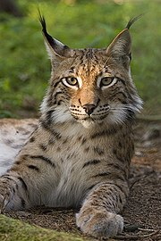

Le lynx, un membre du genre Lynx, est un félin de taille moyenne connu pour ses pattes longues, sa queue courte et ses touffes de poils distinctives au bout des oreilles. Il existe quatre espèces de lynx : le lynx d'Eurasie (Lynx lynx), le lynx du Canada (Lynx canadensis), le lynx ibérique (Lynx pardinus) et le bobcat ou lynx roux (Lynx rufus). Les lynx mesurent généralement entre 80 et 110 cm de longueur, avec une queue de 10 à 20 cm, et leur poids varie de 8 à 30 kg. Leur pelage est épais et peut varier en couleur du brun au gris, souvent avec des taches sombres.
Habitat et Répartition
Ce tigre majestueux préfère les forêts tropicales et subtropicales, les mangroves des Sundarbans, les prairies et les forêts marécageuses. Son territoire est vaste, couvrant des régions protégées telles que les parcs nationaux de Ranthambore, de Jim Corbett et de Sundarbans, où ils trouvent une abondance de proies et des conditions favorables à leur survie.

Comportement et Mode de Vie
Les tigres du Bengale sont des animaux solitaires et territoriaux, chaque individu marquant son territoire avec de l'urine, des sécrétions glandulaires et des griffures sur les arbres. Ils sont principalement nocturnes, chassant des ongulés comme les cerfs axis, les sambars, et les sangliers. Leur méthode de chasse repose sur l'embuscade, utilisant leur camouflage pour se rapprocher de leurs proies avant de lancer une attaque rapide et puissante.